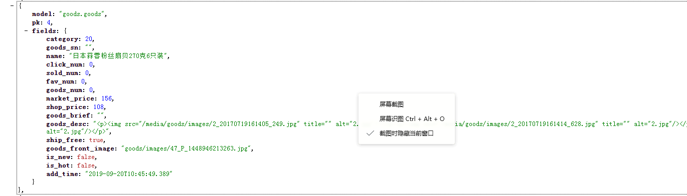
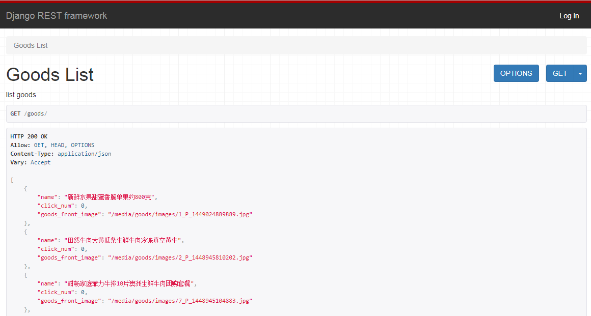

01-django的view实现商品列表
1：json.dumpms()不能处理datatime的数据类型的数据02-django的serializers
使用serializers
他可以序列化时间格式的数据###代码示例
import json
from django.core import serializers
json_data = serializers.serialize('json', goods)
json_data = json.loads(json_data)
from django.http import HttpResponse, JsonResponse
return JsonResponse(json_data, safe=False)###返回示例

###使用serializers的局限性
1：返回数据固定，要修改就要重新组织返回的数据格式
03-django的restframework商品类列表页数据的返回
安装drf的依赖
pip install coreapi
生成drf文档的依赖
导入
from rest_framework.documentation import include_docs_urls
在url中写入
url(r’^docs/‘,include_docs_urls(title=b’慕学生鲜’))
使用drf
在settings的install_apps
INSTALLED_APPS = [
...
'rest_framework',]在url中配置用户认证
url(r'^api-auth/', include('rest_framework.urls')),报错
‘CSRFCheck’ object has no attribute ‘process_request’
解决办法
1：把django升级到1.11.6及以上。
2：在settings文件里添加
REST_FRAMEWORK = {
"DEFAULT_AUTHENTICATION_CLASSES": []
}04初步使用django的rest_framework
写serializers文件
代码示例
注意：
这里的字段必须要和数据库里的字段保持一致
from rest_framework import serializers
class GoodsSerializer(serializers.Serializer):
name = serializers.CharField(required=True,max_length=100)
click_num = serializers.IntegerField(default=0)
goods_front_image = serializers.ImageField()在view中使用
from rest_framework.views import APIView
from rest_framework.response import Response
from .models import Goods
from .serializers import GoodsSerializer
class GoodsListView(APIView):
'''
list goods
'''
def get(self,request,format=None):
goods = Goods.objects.all()[:10]
goods_serialzer = GoodsSerializer(goods,many=True)
return Response(goods_serialzer.data)使用rest_framework的好处
可以根据媒体文件的配置自动加上文件地址
返回示例截图：

05-modelserializer实现商品列表数据的返回
两个概念
1：序列化
2：apiview
login报错修改
….现在登录不上
使用serializers.ModelSerializer示例
from rest_framework import serializers
from goods.models import Goods
class GoodsSerializer(serializers.ModelSerializer):
class Meta:
model = Goods
fields = ('name','click_num','market_price','add_time')
fields = '__all__' 查出所有值序列化显示外键示例
只需要：写，
from rest_framework import serializers
from goods.models import Goods,GoodsCategory
class CategorySerializer(serializers.ModelSerializer):
class Meta:
model = GoodsCategory
fields = "__all__"
class GoodsSerializer(serializers.ModelSerializer):
category = CategorySerializer()
class Meta:
model = Goods
fields = '__all__'06-generics实现列表页和分页功能
generics.ListAPIView返回列表页数据
1：代码示例
class GoodsListView(generics.ListAPIView):
'''
商品列表页
'''
queryset = Goods.objects.all()[:10]
serializer_class = GoodsSerializer分页的配置
分页报错提示：
?: (rest_framework.W001) You have specified a default PAGE_SIZE pagination rest_framework setting,without specifying also a DEFAULT_PAGINATION_CLASS.
HINT: The default for DEFAULT_PAGINATION_CLASS is None. In previous versions this was PageNumberPagination. If you wish to define PAGE_SIZE globally whilst defining pagination_class on a per-view basis you may silence this check.
解决办法：
在项目的settings中添加
'DEFAULT_PAGINATION_CLASS': 'rest_framework.pagination.PageNumberPagination',分页的两种实现方式
1：在settings里设置，代码如下
REST_FRAMEWORK = {
"PAGE_SIZE":10,
'DEFAULT_PAGINATION_CLASS': 'rest_framework.pagination.PageNumberPagination',
"DEFAULT_AUTHENTICATION_CLASSES": []
}2：在view中设置
见官方说明：
https://www.django-rest-framework.org/api-guide/pagination/
07-viewset和router完成商品列表页
本节课讲解viewset
本课程的所有api的完成都会使用viewset来完成
导入
from rest_framework import viewsets源码讲解 —
class GenericViewSet(ViewSetMixin, generics.GenericAPIView)使用viewset实现商品列表页数据展示
步骤view中书写
from django.shortcuts import render
from rest_framework.views import APIView
from rest_framework.response import Response
from .models import Goods
from .serializers import GoodsSerializer
from rest_framework import mixins
from rest_framework import generics
from rest_framework.pagination import PageNumberPagination
from rest_framework import viewsets
class LargeResultsSetPagination(PageNumberPagination):
page_size = 20
page_size_query_param = 'page_size'
max_page_size = 100
class GoodsListViewSet(mixins.ListModelMixin,viewsets.GenericViewSet):
'''
商品列表页
'''
queryset = Goods.objects.all().order_by()
serializer_class = GoodsSerializer
pagination_class = LargeResultsSetPaginationurls中的代码
from goods.views import GoodsListViewSet
goods_list = GoodsListViewSet.as_view({
'get':'list'
})
urlpatterns = [
#商品列表页
# url(r'^goods/',GoodsListView.as_view()),
url(r'^goods/',goods_list,name='goods-list'),]
使用router完成url的配置
https://www.django-rest-framework.org/tutorial/6-viewsets-and-routers/
在url中导入，注册，和使用
from rest_framework.routers import DefaultRouter
注册
router = DefaultRouter()
router.register(r'goods', GoodsListViewSet)
使用
url(r'^',include(router.urls)),08-drf的Apiview、GenericView、Viewset和router的原理分析
GenericViewSet -drf
GenericAPIView -drf
APIView -drf
View -django
mixin
CreateModelMixin
ListModelMixin
RetrieveModelMixin
UpdateModelMixin
DestroyModelMixin
09-drf的request和response
https://www.django-rest-framework.org/api-guide/requests/
https://www.django-rest-framework.org/api-guide/parsers/10-drf的过滤
使用viewset本身的过滤功能
注意：
如果去掉这一段代码会报错
queryset = Goods.objects.all().order_by()
class GoodsListViewSet(mixins.ListModelMixin,viewsets.GenericViewSet):
'''
商品列表页
'''
queryset = Goods.objects.all().order_by()
serializer_class = GoodsSerializer
pagination_class = LargeResultsSetPagination
def get_queryset(self):
return Goods.objects.filter(shop_price__gt=100)
对传递的参数进行过滤
class GoodsListViewSet(mixins.ListModelMixin,viewsets.GenericViewSet):
'''
商品列表页
'''
queryset = Goods.objects.all().order_by()
serializer_class = GoodsSerializer
pagination_class = LargeResultsSetPagination
def get_queryset(self):
query_set = Goods.objects.all()
price_min = self.request.query_params.get('price_min',0)
if price_min:
query_set = Goods.objects.filter(shop_price__gt=int(price_min))
return query_set03：43参数过多时的过滤
https://www.django-rest-framework.org/api-guide/filtering/如何使用
https://www.django-rest-framework.org/api-guide/filtering/#djangofilterbackend
pip install django-filter代码
注意：
要写这个：
queryset = Goods.objects.all().order_by()
view中
from django_filters.rest_framework import DjangoFilterBackend
class GoodsListViewSet(mixins.ListModelMixin,viewsets.GenericViewSet):
'''
商品列表页
'''
queryset = Goods.objects.all().order_by()
serializer_class = GoodsSerializer
pagination_class = LargeResultsSetPagination
filter_backends = (DjangoFilterBackend,)
filter_fields = ('name','shop_price')
settings
INSTALLED_APPS = [
'django_filters']
09:23-模糊搜索，和价格的区间搜索
django-filter在github的源码地址
https://github.com/carltongibson/django-filter
https://django-filter.readthedocs.io/en/master/
https://django-filter.readthedocs.io/en/master/guide/rest_framework.html#quickstart
代码示例
写filters文件
import django_filters
from .models import Goods
class GoodsFilter(django_filters.rest_framework.FilterSet):
min_price = django_filters.NumberFilter(field_name="shop_price", lookup_expr='gte')
max_price = django_filters.NumberFilter(field_name="shop_price", lookup_expr='lte')
class Meta:
model = Goods
fields = ['min_price', 'max_price']
view中的配置
class GoodsListViewSet(mixins.ListModelMixin,viewsets.GenericViewSet):
'''
商品列表页
'''
queryset = Goods.objects.all().order_by()
serializer_class = GoodsSerializer
pagination_class = LargeResultsSetPagination
filter_backends = (DjangoFilterBackend,)
filterset_class = GoodsFilter11 drf的搜索和排序
配置like查询
代码示例
写filters文件
import django_filters
from .models import Goods
class GoodsFilter(django_filters.rest_framework.FilterSet):
min_price = django_filters.NumberFilter(field_name="shop_price", lookup_expr='gte')
max_price = django_filters.NumberFilter(field_name="shop_price", lookup_expr='lte')
name = django_filters.CharFilter(field_name="name", lookup_expr='icontains')
class Meta:
model = Goods
fields = ['min_price', 'max_price','name']
view中的配置
class GoodsListViewSet(mixins.ListModelMixin,viewsets.GenericViewSet):
'''
商品列表页
'''
queryset = Goods.objects.all().order_by()
serializer_class = GoodsSerializer
pagination_class = LargeResultsSetPagination
filter_backends = (DjangoFilterBackend,)
filterset_class = GoodsFilter04：26搜索
SearchFilter
https://www.django-rest-framework.org/api-guide/filtering/#searchfilter
使用
from rest_framework import filters
class GoodsListViewSet(mixins.ListModelMixin,viewsets.GenericViewSet):
'''
商品列表页
'''
queryset = Goods.objects.all().order_by()
serializer_class = GoodsSerializer
pagination_class = LargeResultsSetPagination
filter_backends = (DjangoFilterBackend,filters.SearchFilter) #
filterset_class = GoodsFilter #使用django的filter价格区间的查询
search_fields = ['name', 'goods_brief','goods_desc'] #
更多搜索的设置
By default, searches will use case-insensitive partial matches. The search parameter may contain multiple search terms, which should be whitespace and/or comma separated. If multiple search terms are used then objects will be returned in the list only if all the provided terms are matched.
The search behavior may be restricted by prepending various characters to the search_fields.
'^' Starts-with search.
'=' Exact matches.
'@' Full-text search. (Currently only supported Django's MySQL backend.)
'$' Regex search.
For example:
search_fields = ['=username', '=email']11:26 排序
https://www.django-rest-framework.org/api-guide/filtering/#orderingfilter
class GoodsListViewSet(mixins.ListModelMixin,viewsets.GenericViewSet):
'''
商品列表页，分页，搜索，过滤，排序
'''
queryset = Goods.objects.all().order_by()
serializer_class = GoodsSerializer
pagination_class = LargeResultsSetPagination
filter_backends = (DjangoFilterBackend,filters.SearchFilter,filters.OrderingFilter)
filterset_class = GoodsFilter #使用django的filter价格区间的查询
search_fields = ['name', 'goods_brief','goods_desc']
ordering_fields = ['sold_num', 'add_time']